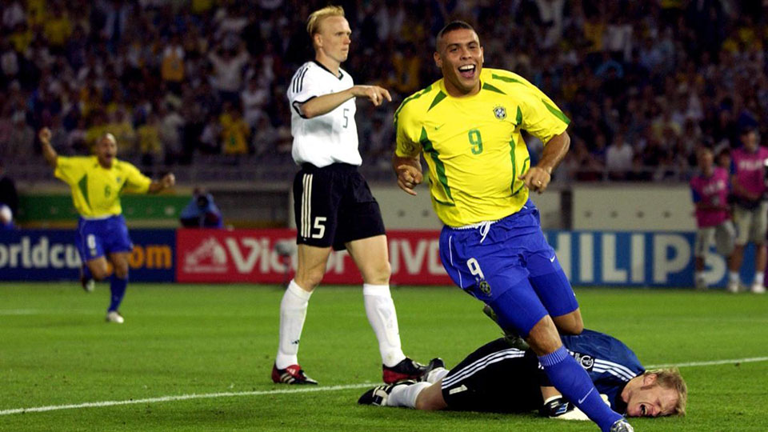

17.ª edición
Primer Mundial en Asia
Primero con dos sedes
Copa Mundial de la FIFA Corea–Japón 2002
31 de mayo – 30 de junio de 2002
Sedes: Corea del Sur 🇰🇷 & Japón 🇯🇵
32 selecciones
64 partidos
Datos generales del torneo
- Países sede: Corea del Sur 🇰🇷 y Japón 🇯🇵
- Ciudades sede: Seúl, Busan, Daegu, Sapporo, Yokohama, Osaka, Kobe, Niigata, Shizuoka y más
- Estadios: 20 estadios en total
- Selecciones participantes: 32
- Partidos jugados: 64
- Goles anotados: 161
- Campeón: Brasil 🇧🇷
- Subcampeón: Alemania 🇩🇪
- Tercer lugar: Turquía 🇹🇷
- Cuarto lugar: Corea del Sur 🇰🇷
- Máximo goleador (Bota de Oro): Ronaldo (8 goles)
- Mejor jugador (Balón de Oro): Oliver Kahn
- Mejor portero: Oliver Kahn
- Premio Fair Play: Bélgica 🇧🇪
Jugadas y momentos destacados
El Mundial 2002 es recordado por la consagración de Ronaldo, el sorprendente desempeño de Corea del Sur
y varias eliminaciones inesperadas como Francia, Argentina y Portugal.

Resumen del torneo
- Brasil conquistó su quinto título mundial, récord absoluto.
- Italia, España y Portugal quedaron eliminados por Corea del Sur en partidos polémicos.
- Francia, vigente campeona, quedó eliminada en fase de grupos sin marcar un solo gol.
- Brasil venció a Alemania 2–0 en la final con doblete de Ronaldo.
- Kahn fue el primer portero en la historia en ganar el Balón de Oro del torneo.
Fase final (últimos 4)
Semifinales
- 🇩🇪 Alemania 1–0 Corea del Sur 🇰🇷
- 🇧🇷 Brasil 1–0 Turquía 🇹🇷
Tercer lugar
- 🇹🇷 Turquía 3–2 Corea del Sur 🇰🇷
Final
- 🇧🇷 Brasil 2–0 🇩🇪 Alemania
Goles: Ronaldo (2)
Selecciones participantes por grupo
Grupo A
- 🇫🇷 Francia
- 🇸🇳 Senegal
- 🇺🇾 Uruguay
- 🇩🇰 Dinamarca
Grupo B
- 🇪🇸 España
- 🇸🇮 Eslovenia
- 🇵🇾 Paraguay
- 🇿🇦 Sudáfrica
Grupo C
- 🇧🇷 Brasil
- 🇹🇷 Turquía
- 🇨🇳 China
- 🇨🇷 Costa Rica
Grupo D
- 🏴 Inglaterra
- 🇸🇪 Suecia
- 🇳🇬 Nigeria
- 🇦🇷 Argentina
Grupo E
- 🇩🇪 Alemania
- 🇸🇦 Arabia Saudita
- 🇮🇪 Irlanda
- 🇨🇲 Camerún
Grupo F
- 🇸🇦 Arabia Saudita
- 🇩🇪 Alemania
- 🇮🇪 Irlanda
- 🇨🇲 Camerún
Grupo G
- 🇮🇹 Italia
- 🇭🇷 Croacia
- 🇲🇽 México
- 🇪🇨 Ecuador
Grupo H
- 🇰🇷 Corea del Sur
- 🇵🇱 Polonia
- 🇺🇸 Estados Unidos
- 🇵🇹 Portugal
Final: Brasil vs Alemania
En Yokohama, Brasil derrotó 2–0 a Alemania con dos goles de Ronaldo, logrando su quinto campeonato mundial.
El portero alemán Oliver Kahn, figura del torneo, cometió un raro error que permitió el primer gol.
Brasil 🇧🇷 – Alineación titular
- DT: Luiz Felipe Scolari
- Ronaldo
- Rivaldo
- Ronaldinho
- Gilberto Silva
- Kléberson
- Roberto Carlos
- Cafu (C)
- Roque Júnior
- Lucio
- Edmílson
- Marcos (POR)
Alemania 🇩🇪 – Alineación titular
- DT: Rudi Völler
- Oliver Kahn (POR, C)
- Carsten Ramelow
- Thomas Linke
- Christoph Metzelder
- Bernd Schneider
- Dietmar Hamann
- Jens Jeremies
- Torsten Frings
- Marco Bode
- Oliver Neuville
- Mirolsav Klose
Reseña general
Corea–Japón 2002 revolucionó la historia del torneo al convertirse en el primer Mundial celebrado en Asia y el único
que ha contado con dos países anfitriones. Fue un torneo vibrante con múltiples sorpresas, arbitrajes polémicos y la consagración definitiva de Ronaldo.
Turquía terminó en un histórico tercer lugar y Corea del Sur llegó hasta semifinales, algo nunca visto en una selección asiática.